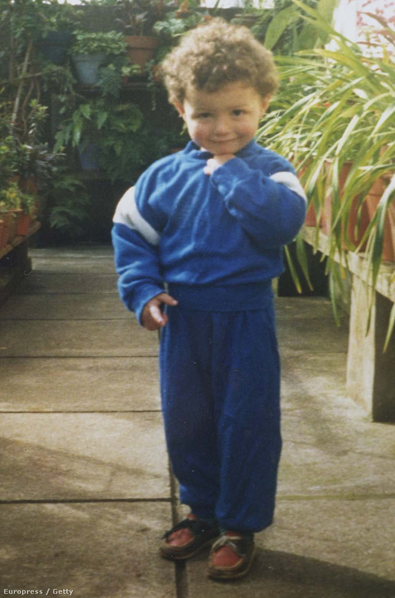
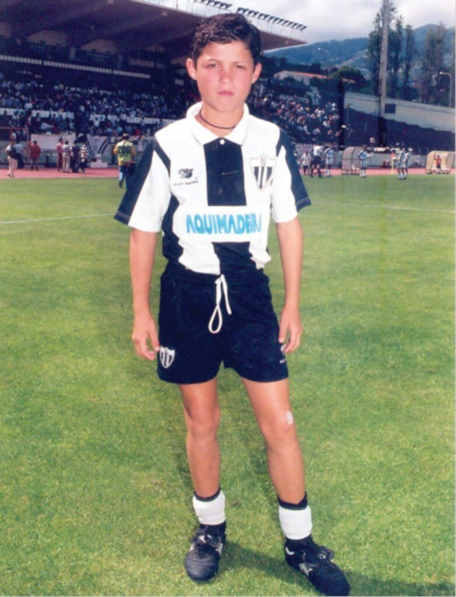
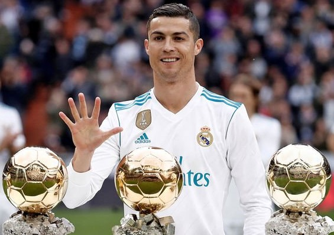

Ki is az a CR7?
Cristiano Ronaldo dos Santos Aveiro 1985. február 5-én született Funchal városában, Madeira szigetén. A Ronaldo nevet, második keresztnevét Ronald Reagan amerikai elnök iránti tiszteletből kapta. Édesanyja korábban szakácsnőként dolgozott, édesapja pedig kertész volt, valamint a funchali tanács alkalmazottja. Három idősebb testvére van, egy bátyja és két nővére. Ronaldo a szegény madeirai srác az utcán tanult meg mindent, amit erről a csodálatos játékról tud. Kiskorától kezdve azon ábrándozott, hogy egyszer a Real Madridban fog játszani.

Honnan indult a későbbi csillag?
Ronaldo első csapata a CF Andorinha volt. Hivatalosan 1993-tól játszott a kék-fehér színeket viselő kölyökcsapatban, de tulajdonképpen már előtte is látogatta az edzéseket. Itt édesapja afféle mindenesként dolgozott, gyúró, szertáros volt. 1995-ben a sziget egyik legjobb klubjába, a Club Desportivo Nacionalba szerződött. Ronaldo lett a kulcsembere a Nacionalnak, a csapatkapitányi karszalagot is megkapta, sőt megnyerték a helyi bajnokságot, melyben Ronaldonak kulcsszerepe volt. Miután itt több címet is nyert, háromnapos próbajátékon vehetett részt a nagynevű Sporting CP csapatánál. Miután meggyőzte a szakmai stábot kivételes tehetségéről, 12 évesen Lisszabonba költözött. Itt kezdődött minden...


Ronaldo pályafutása során 5-ször vehette át a legjobbaknak járó Aranylabdát.
Ronaldo élete egyik legszebb gólja!

Ugrás az oldal tetejére!